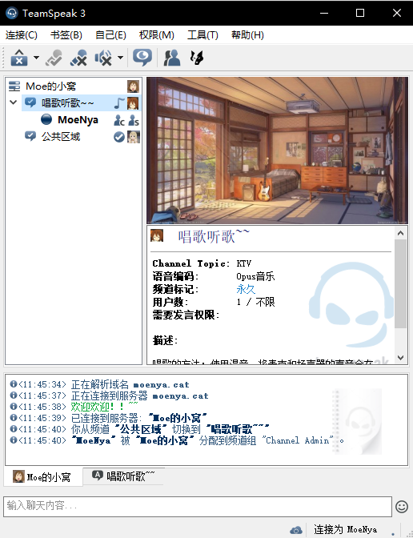

TS占用资源和带宽比较少，于是我想搞一个，反正服务器压力不大。做好之后大概是这个样子的：
没有广告不臃肿，也不会突然弹个直播界面出来的一个个人小空间，稍微贴一些图片图标，还是蛮温馨的ww首先准备好一台服务器，这里记录Linux的方法：
2.解压，tar命令把刚刚下载的压缩包解压，如果不知道名字可以用ls命令看一下，名字太长的话可以mv改名或者按Tab键补全。
3.解压后进入文件，创建一个隐藏文本文件”.ts3server_license_accepted”
4.开启服务运行”ts3server_startscript.sh”文件 ./ts3server_startscript.sh star
开启后会返回一个一次性的管理员权限的字符串，复制好，然后打开ts连接到服务器，在”权限”中点”使用密匙”，将刚刚复制的字符串粘贴上，你本机登录的那个用户就有了管理员权限。因为那个字符串是一次性的，所以最好绑定同步到你的ts账号上，这样在其他设备，只要登录了ts账号就能自动同步管理员权限。如果还是怕管理员权限丢失的话，还是在”权限”中点”密匙管理”，再创建一个新的管理员密匙，当然也是一次性的，把它保存好就行了。